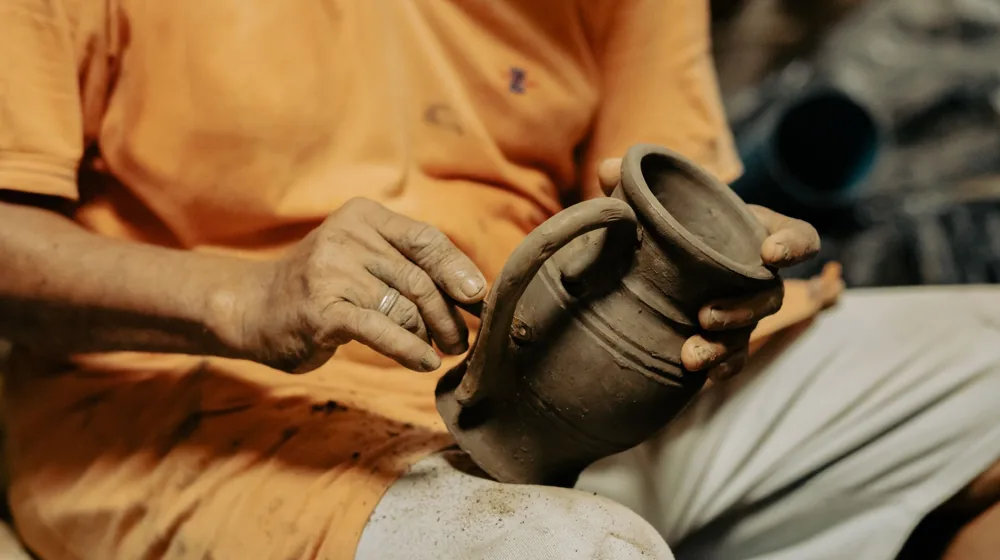

K-공예 원데이클래스, 뭘 만들어볼까? 초보도 망설임 없이 즐기는 꿀팁
사진: Deniz ŞENGÜL / Pexels (무료 이미지, 출처 표기)
K-공예 원데이클래스, 왜 주목받을까요?

나만의 특별한 취미를 찾거나 한국의 아름다운 문화를 직접 경험하고 싶은 분들이 K-공예 원데이클래스에 많은 관심을 보이고 있습니다. K-공예는 단순히 물건을 만드는 것을 넘어, 한국 전통의 미학과 장인의 정신을 현대적으로 재해석한 예술 활동입니다. 짧은 시간 안에 직접 작품을 완성하고 가져갈 수 있다는 점이 큰 매력으로 작용합니다.
특히 2026년 8월 기준, 다양한 온라인 플랫폼과 공방에서 접근성 높은 원데이클래스를 제공하고 있어, 평소 손재주가 없다고 생각했던 분들도 부담 없이 도전해볼 수 있습니다. 이 글에서는 K-공예 원데이클래스를 선택하고 즐기는 데 필요한 모든 실질적인 정보를 알려드립니다.
나에게 딱 맞는 K-공예, 이렇게 골라보세요
수많은 K-공예 중 어떤 것을 선택해야 할지 고민이라면, 각 공예의 특징과 난이도를 고려해보는 것이 좋습니다. 시간, 비용, 그리고 완성품의 활용도를 기준으로 자신에게 맞는 클래스를 찾아보세요. 아래 표는 인기 있는 K-공예 원데이클래스의 주요 특징을 비교한 것입니다.
만약 손재주가 서툴다고 느끼거나 짧은 시간 내에 만족스러운 결과물을 원한다면 한지 공예나 보자기 아트를 추천합니다. 좀 더 집중해서 섬세한 작업을 해보고 싶다면 민화 그리기나 도예 체험도 좋은 선택이 될 수 있습니다. 2026년 8월 기준으로 위 금액은 평균적인 수준이며, 클래스 내용이나 공방에 따라 달라질 수 있으니 예약 시 다시 확인하는 것이 중요합니다.
원데이클래스 예약부터 체험까지, 3단계 가이드
- 클래스 검색 및 선택: 온라인 클래스 플랫폼(예: 프립, 클래스101, 숨고 등)이나 K-공예 전문 공방 웹사이트에서 원하는 지역과 공예 종류를 검색합니다. 후기를 꼼꼼히 살펴보고, 강사의 전문성과 공방의 분위기가 자신에게 맞는지 확인하세요.
- 예약 및 결제: 원하는 클래스를 선택한 후, 스케줄을 확인하고 온라인으로 예약 및 결제를 진행합니다. 이때, 클래스 진행에 필요한 모든 재료비가 포함된 가격인지, 아니면 추가 비용이 발생할 수 있는지 확인해야 합니다. 예약 확정 시 공방 위치, 준비물, 유의사항 등을 안내받게 됩니다.
- 클래스 참여 및 작품 완성: 예약된 날짜와 시간에 맞춰 공방에 방문합니다. 대부분의 K-공예 원데이클래스는 초보자도 쉽게 따라 할 수 있도록 친절한 설명과 시연으로 진행됩니다. 강사의 지시에 따라 자신만의 작품을 만들어보고, 궁금한 점은 적극적으로 질문하며 즐겁게 참여하세요. 도예처럼 건조 및 가마 소성 과정이 필요한 경우, 완성품 수령까지 며칠 또는 몇 주가 소요될 수 있습니다.
알찬 K-공예 체험을 위한 숨은 팁 & 주의사항
- 편안한 복장: 공예 작업은 예상치 못하게 옷에 재료가 묻을 수 있으므로, 편안하고 오염되어도 괜찮은 복장을 착용하는 것이 좋습니다. 앞치마를 제공하는 곳도 많지만, 미리 준비하면 더욱 좋습니다.
- 오픈 마인드: 완벽한 작품을 만들겠다는 부담감보다는, 새로운 경험과 과정 자체를 즐기겠다는 마음으로 참여하는 것이 중요합니다. 서투르더라도 강사의 도움을 받아가며 즐겁게 만들다 보면 예상치 못한 만족감을 얻을 수 있습니다.
- 작품 활용 계획: 완성된 작품을 어디에 둘지, 어떻게 활용할지 미리 생각해두면 클래스 선택에 도움이 됩니다. 예를 들어, 보자기 아트로 포장한 선물은 특별한 날 감동을 더할 수 있고, 직접 만든 도자기는 식탁을 더욱 풍성하게 만들어줄 것입니다.
- 사진 촬영: 작품을 만드는 과정이나 완성된 작품을 사진으로 남기면 좋은 추억이 됩니다. 단, 다른 수강생에게 방해가 되지 않도록 주의하며 촬영하세요.
K-공예 원데이클래스, 이것도 궁금했어요!
Q: 손재주가 정말 없는데 괜찮을까요?
A: 네, 괜찮습니다. 대부분의 K-공예 원데이클래스는 공예 경험이 전혀 없는 초보자를 위해 기획됩니다. 강사가 옆에서 꼼꼼히 지도해주며, 어려운 부분은 직접 도와주기도 합니다. 과정 자체를 즐기는 것에 집중하면 됩니다.
Q: 아이와 함께 참여할 수 있는 클래스도 있나요?
A: 물론입니다. 일부 공방에서는 어린이를 위한 K-공예 클래스나 가족 단위 클래스를 운영하기도 합니다. 예약 전에 공방에 문의하여 참여 가능 연령이나 별도 준비물이 있는지 확인하는 것이 좋습니다.
Q: 클래스 소요 시간은 정확히 어떻게 되나요?
A: 위 표에 제시된 시간은 평균적인 소요 시간입니다. 공예 종류, 작품의 크기나 복잡성, 개인의 작업 속도에 따라 차이가 있을 수 있습니다. 예약 시 해당 클래스의 정확한 소요 시간을 다시 확인하세요.
Q: 완성품을 바로 가져갈 수 있나요?
A: 대부분의 공예는 클래스 종료 후 바로 가져갈 수 있지만, 도예나 칠기처럼 건조, 소성, 마감 등 추가 공정이 필요한 경우 며칠에서 몇 주 후에 재방문하여 수령하거나 택배로 받을 수 있습니다. 예약 시 완성품 수령 방법을 꼭 확인해야 합니다.
🔗 이 글도 함께 보면 좋아요: 1인 가구도 부담 없이! K-공예 소품으로 나만의 공간 꾸미는 3가지 노하우
관련 추천 상품
이 포스팅은 쿠팡 파트너스 활동의 일환으로, 이에 따른 일정액의 수수료를 제공받습니다.